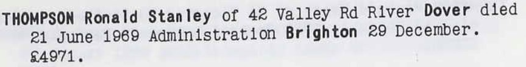
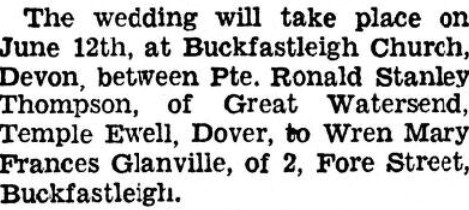
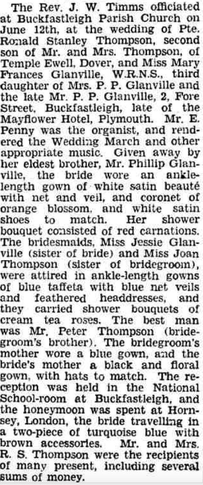

Ronald Stanley Thompson 1919 - 1969
[ Home ] | [ Calendar ] | [ Surnames Index ] | [ Family History ]A driver farm and the son of Harold Thompson (a cowman on a farm) and Hetty Page, Ronald Thompson, the fourth cousin on the father's side of <a href="I1.html">Nigel Horne</a>, was born in Elham, Kent, England on Apr 27, 1919<span class="citation">1,2,3</span>. He married Mary Glanville in Buckfastleigh, Devon, England on Jun 12, 1943<span class="citation">4</span>.</p><p>Throughout his life, he lived at The Bungalow, Temple Ewell, Kent, England on Sep 29, 1939<span class="citation">1</span>; and on 42 Valley Road, Dover, Kent in 1969. <p>He died on Jun 21, 1969 in Dover, Kent<span class="citation">3</span>.
Parents
- Harold William was born on Oct 13, 1889
- Hetty Camelia was born on Mar 12, 1889
Citations
- 1939 Register - Findmypast (was the son of the head of the household)
- England & Wales births 1837-2006 - Findmypast
- England & Wales deaths 1837-2007 - Findmypast
- England & Wales Marriages 1837-2005 - Findmypast
Media
Ronald Stanley Thompson - Probate

Dover Express - 21 May 1943

Dover Express - 25 Jun 1943

England & Wales births 1837-2006 - BMD/B/1919/2/AZ/001112/024
England & Wales deaths 1837-2007 - BMD/D/1969/2/AZ/001149/125
1939 Register - TNA/R39/1815/1815H/015/31
England & Wales marriages 1837-2005 - BMD/M/1943/2/AZ/001219/139
Family Tree

Generated by Ged2Site. Last updated on Jul 20, 2025